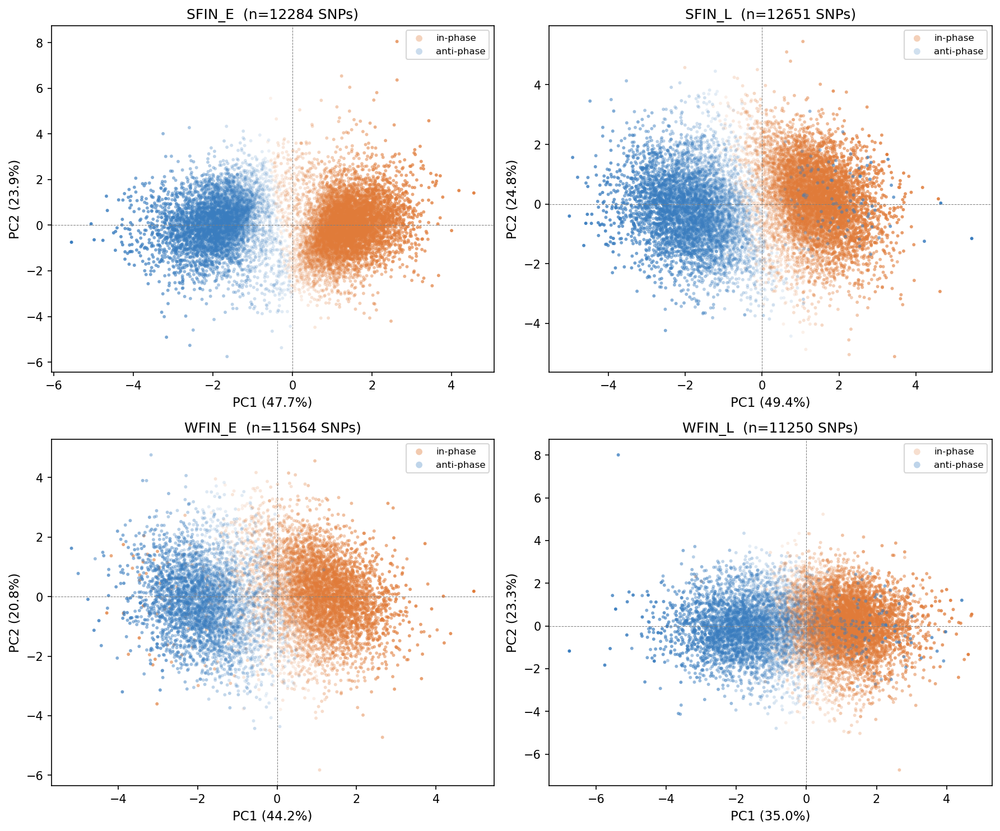

PCA of thinned fluctuating SNPs for each population using dz (between consecutive
annual intervals), after minor-allele polarization.
SNPs are colored by
sync score sign (orange) for SNPs in
phase (sync > 0) and (blue) for
SNPs in opposite phase (sync < 0).
Transparency of dots is scaled by sync score magnitude.
